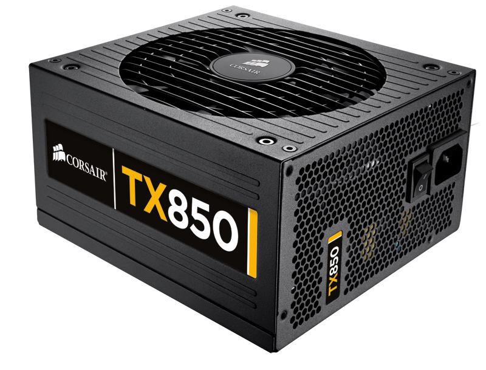

|
|
| FORM PEMBELIAN KOMPUTER DISINI!! |
PSU ATX
|
PSU ATX adalah jenis power supply yang paling umum digunakan dalam desktop PC. PSU ini dinamakan berdasarkan form factor "ATX" (Advanced Technology eXtended), yang merupakan standar industri untuk ukuran dan koneksi daya. PSU ATX menawarkan daya yang stabil dan distribusi yang efisien, cocok untuk sebagian besar kebutuhan komputer rumah, gaming, dan workstation. PSU ATX memiliki berbagai kapasitas daya, mulai dari 300W hingga 1200W atau lebih, yang memungkinkan pengguna memilih sesuai dengan kebutuhan daya komponen-komponen dalam sistem. Keunggulan dari PSU ATX adalah kemudahan dalam instalasi dan kompatibilitas dengan berbagai komponen komputer. Biasanya, PSU ATX dilengkapi dengan kabel yang dapat dilepas (modular atau semi-modular), yang mempermudah pengelolaan kabel dan sirkulasi udara di dalam casing. Keandalannya yang tinggi, serta berbagai fitur perlindungan seperti proteksi terhadap overvoltage, overcurrent, dan short circuit, menjadikannya pilihan utama bagi pengguna yang menginginkan sistem komputer yang stabil dan aman. |
 |